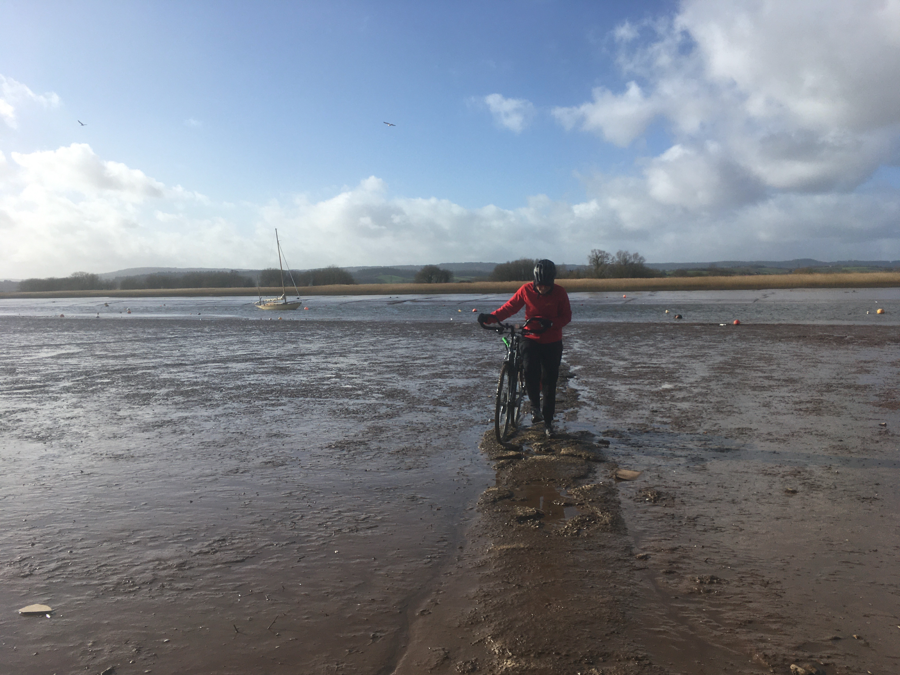
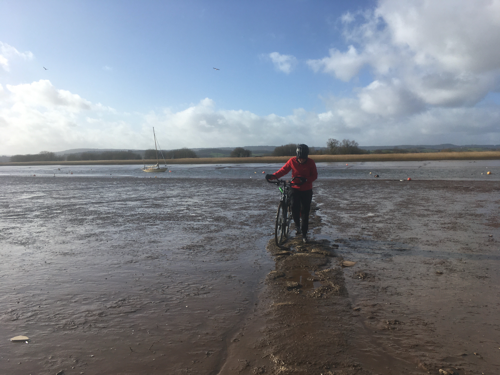
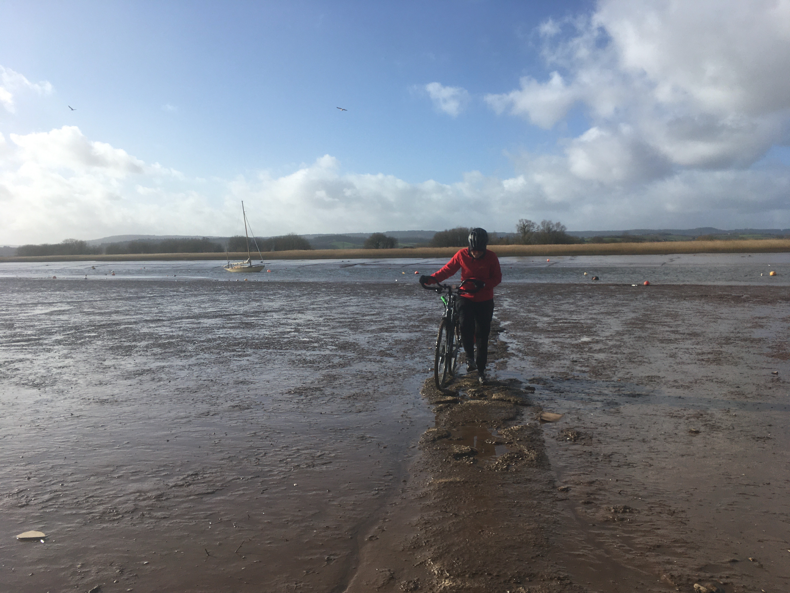

Julia Roquette

Julia Roquette
I dedicate my research to understanding the formation and evolution of low mass stars like the Sun. I am interested in understanding how differ-
ent physical processes lead to variability in the observed light from these stars. My favourite stellar variability process is the formation of spots in the stellar surface, which allow observers to measure the spin rates of stars. A lot of my previous research has focused on the spin rates of stars using both observations and theory. On the observational side, I have led the measurement of spin rates in the young Cygnus OB2 association and the open cluster NGC 3766. I am the PI of an ongoing observational campaign observing stellar spin rates in the Carina Nebula Complex using the ESO VISTA telescope during 2022. I am also the co-author of studies investigating the influence of stellar metallicity on the spin evolution and detectability of spots in low mass stars located in the Kepler Field. On the theoretical side, I developed a spin evolution model that considers how the spins of stars are influenced by the environmental conditions at the stars' close neighbourhood. You can learn more about my research by visiting my Research page.
I am currently a Maître Assistante at the Département D'Astronomie of the Université de Genève, located at the Observatoire Astronomique de Genève, in Versoix, Switzerland. Here, I work as a postdoc in the NEMESIS project. NEMESIS stands for Novel Evolutionary Model for the Early Stages of Stars with Intelligent Systems, and it is an EU Horizon 2020/SPACE funded project that has the ambition of combining artificial intelligence methods with the large availability of astronomical data to improve our understanding of the early stages of evolution of stars, when they still host a protoplanetary disk and are forming planets. In my current contribution to the NEMESIS project, I have been compiling a panchromatic catalogue for young stellar objects (YSO) in the solar neighbourhood (within 500 pc).
Before moving to the UK, I did my PhD between 2013 and 2017 at the Universidade Federal de Minas Gerais in Brazil, and in the middle of my PhD, I spent a year as a visiting researcher at the Institut de Planétologie et d'Astrophysique de Grenoble in France. Unfortunately, by the time I finished my PhD in Brazil, the politicians in power over there were working very hard to make the life of the scientists in the country impossible.
After teaching physics and astrophysics for six months at the Universidade Federal de Sergipe, in the northeast of the country, I became one more of the scientists who left Brazil over the last years in search of appropriate conditions and better incentives for doing high quality science.
I was born in Belo Horizonte, the capital of the state of Minas Gerais in the core of the southeast region of Brazil. My region and hometown are famous for their mountains and very rich culinary. One of our culinary jewels is the Minas Cheese, a type of cheese produced only in the region and widely used in our traditional recipes. In order to have Minas Cheese with me wherever I live in the world, I am a cheesemaker in my free time.
When I am not doing science or making cheese, I am also a cycle-touring and bike-mechanics enthusiast. Since 2020, I have cycled more than
3,000 km for leisure, touring and transport. This included the Devon Coast-to-coast from Barnstaple to Plymouth in the UK and several multi-day tours around Devon. Between 2020 and 2021, I was a bike-mechanics volunteer at the Ride On, a small charity in Exeter that refurbishes donated and abandoned bikes and puts them back in circulation. In 2020 I built a touring bike from scratch, and in 2021 I put a lot of time into learning the art of bike-wheel building, having built about 15 wheels from scratch that year. From mid to late 2021, I also helped Ride On to establish and run the Wom+n's Workshop, a women-led weekly bike-mechanics course dedicated to empowering women by teaching them how to fix and maintain their own bikes. In December 2021, I was interviewed by the Exeter Living Magazine about the project, check it out! You can learn more about my bike-related activities on the bike adventure page.
To contact me
Click here!Last updated: 29th January 2022 - © Copyright Julia Roquette
{kind=link}